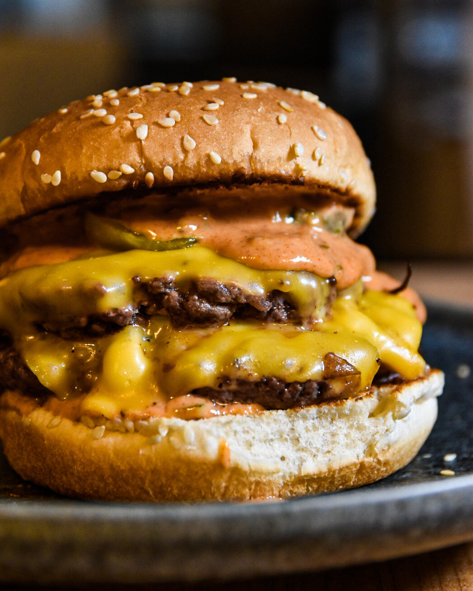

Burger

Description
This easy burger Recipe is meaty, cheesy, and packed with flavor
in every bite. Homemade burgers are better than any restaurant version
and they feed you a healthier meal for way less than going out to eat.
Ingredients
- Ground beef
- Salt
- Pepper
- Garlic
- Olive oil
- burger buns
- Mayonnaise
- Mustard
- Cheddar cheese
Steps
- Prepare the meat - Place your ground beef in a bowl with some salt, pepper and garlic and give it a good mix.
- Make the patty - Set out a baking sheet, lined with wax paper or foil, to hold the patties. One at a time, gather the patty mix and press firmly into patties of your desired thickness. You typically want hamburger patties to be slightly larger than the buns they'll be served on since they'll shrink a bit in the cooking process.
- Cook the patties - preheat the grill or a skillet to medium heat, approximately 350-400 degrees F. Cook on both sides for approximately 3 minutes per side.
- Prep - Stack the hot patties on hamburger buns, and dress up with your favorite hamburger toppings and condiments.
- Enjoy - Serve your hot burgers on a plate and eat them with a beer on one hand.